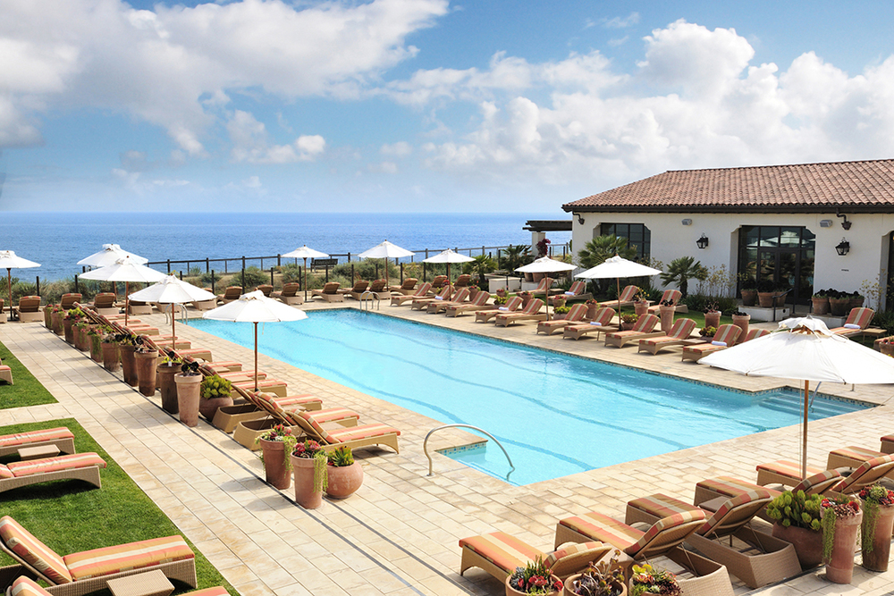

Terranea Resort
Terranea is located just 17 miles south of LAX, and is proximate to John Wayne and Long Beach airports, as well. Rising above the Palos Verdes Peninsula on the Southern California coast, just minutes from Los Angeles, sits Terranea, a haven for those seeking an exclusive retreat from the grind of city life.
While Terranea celebrates its fifth anniversary this year, the history of the landscape is as rich and far-reaching as the views from the paths traversing the resort. Originally a hacienda with a flourishing cattle ranching operation, the property was originally slated to be developed into an exclusive villa community. Instead, Marineland, the world’s largest oceanarium, featuring entertainment and research facilities was opened, one year before Disneyland, making it the state’s first major theme park.
Guided by five pillars, including community, wellness, discovery, epicurean, and celebration, Terranea offers singular experiential encounters. On-site activities find guests watching dolphins from a beach enclave simply known as the Cove, stand-up paddleboarding, kayaking, snorkling, on a guided bike ride, an ocean-side hike, or a horseback trail ride.
 Terranea Resort, California
Terranea Resort, California
A Southern California oasis, Terranea Resort features four sparkling salt water pools with stunning views of the Pacific Ocean, private cabanas, family-friendly amenities, delectable food and beverage offerings and a 140-foot water slide.

Terranea Resort, California
Designed with relaxation in mind, this serene setting is reserved for spa guests and features spectacular ocean views, private cabanas, fire pits, and a 25-meter pool. This chic oceanfront retreat offers an adult-only atmosphere, sparkling pool with private cabanas, and stunning views of Catalina Island. For resort guests ages 13 and older, the saltwater pool and hot tub offer stunning views of the Pacific Ocean.
©2019 Vacation Spots
Top